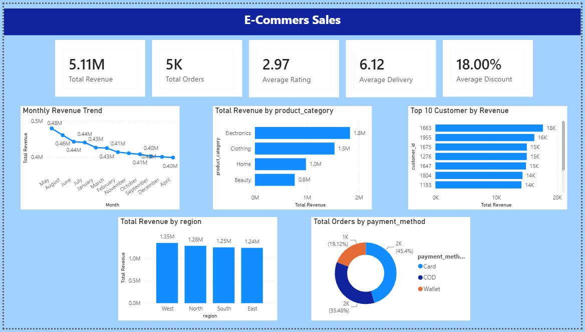
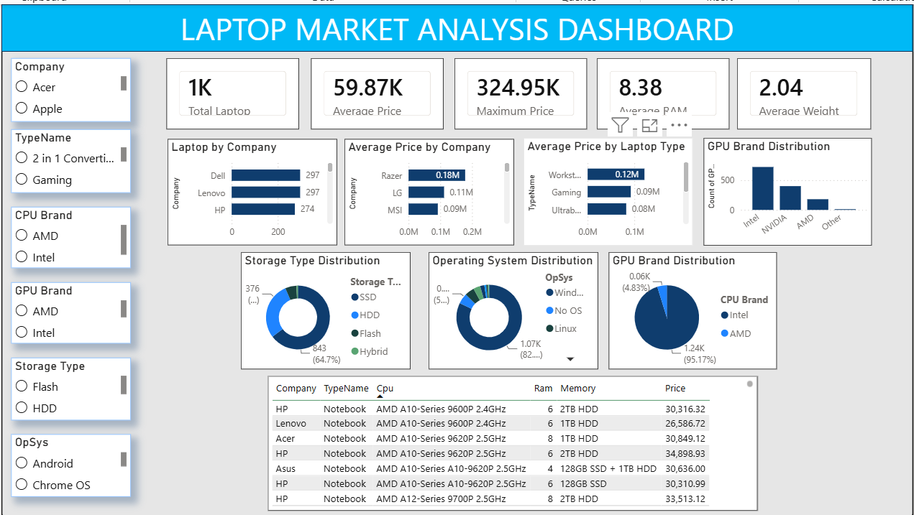
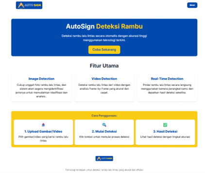
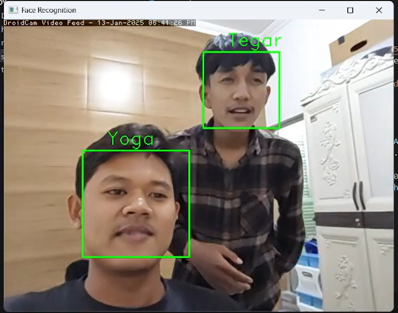
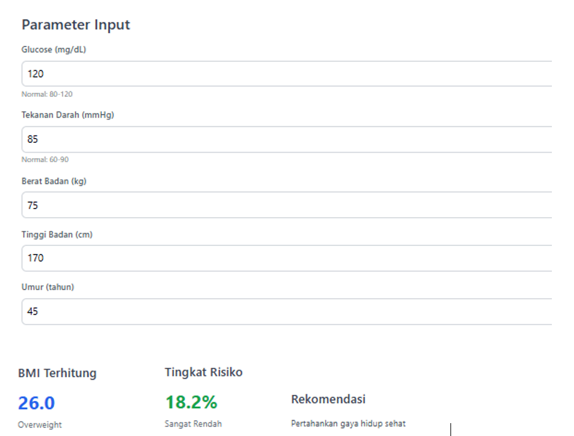
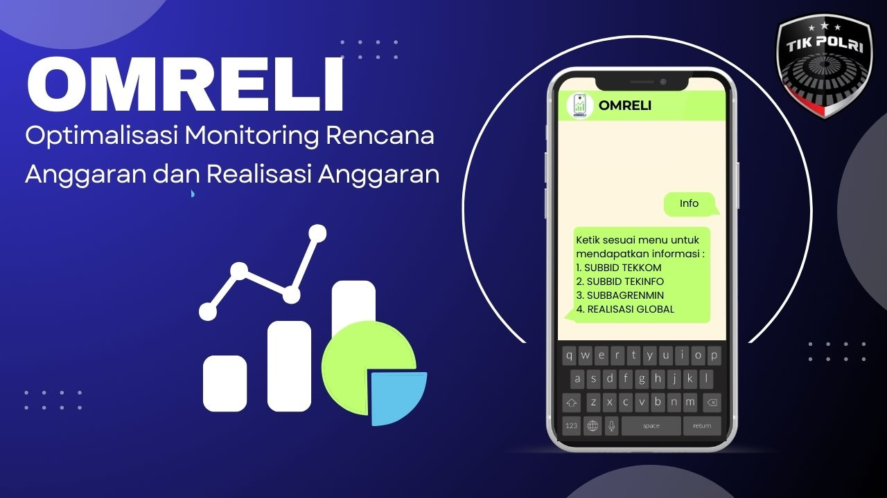
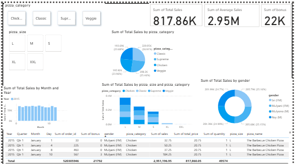

Hi, I'm Yoga Dwi Rizki Fauzi
Data Analyst • Business Intelligence • Machine Learning
Fresh graduate Sarjana Informatika (S.Kom.) Universitas Teknologi Yogyakarta dengan minat pada Data Analytics dan Business Intelligence. Berpengalaman membangun dashboard Power BI dengan Power Query dan DAX, menganalisis data dengan SQL dan Python, serta mengembangkan model Computer Vision menggunakan YOLO melalui proyek akademik dan magang.
7
Portfolio Projects
4
Professional Certifications
1
Internship Experience
Transforming Data Into Insights
Saya fresh graduate Sarjana Informatika yang tertarik mengubah data mentah menjadi insight yang membantu pengambilan keputusan. Pengalaman saya mencakup pengolahan dan visualisasi data, pengembangan dashboard Power BI, serta pengembangan model Computer Vision menggunakan YOLO.
Technical Skills
Tech Stack
Python
SQL
Power BI
Excel
Machine Learning
OpenCV
YOLO
GitHub
Featured Projects
Beberapa proyek yang menunjukkan kemampuan saya dalam Data Analytics, Business Intelligence, Artificial Intelligence, Machine Learning, dan System Development.

Ecommerce Sales Dashboard
Dashboard interaktif menggunakan Power BI untuk menganalisis penjualan, profit, customer, dan product performance dengan Power Query serta DAX.
Dashboard Power BI untuk memantau performa penjualan toko online dalam satu halaman, mulai dari penjualan dan profit sampai perilaku customer dan performa produk.
Tools yang digunakan
- Microsoft ExcelSumber dataset transaksi.
- Power QueryMembersihkan dan mentransformasi data sebelum dimodelkan.
- DAXMembuat measure untuk metrik seperti total penjualan, profit, dan jumlah customer.
- Power BIVisualisasi interaktif dengan filter dan slicer.
Alur pengerjaan
- Mengimpor data transaksi dari Excel ke Power BI.
- Membersihkan dan merapikan data di Power Query.
- Membuat measure DAX untuk KPI utama.
- Merancang visual dan slicer agar dashboard mudah dieksplorasi.
Insight & hasil
- Penjualan dan profit ditampilkan berdampingan, sehingga produk yang laku tetapi margin rendah mudah dikenali.
- Analisis customer dan product performance membantu menentukan produk atau segmen yang layak diprioritaskan.
- Filter interaktif memungkinkan pengguna menelusuri performa per periode, kategori, atau produk tanpa membuat laporan baru.

Laptop Price Analysis Dashboard
Dashboard Power BI untuk menganalisis harga laptop berdasarkan brand, processor, RAM, storage, dan GPU, lengkap dengan visualisasi Top 10 Laptop Termahal.
Dashboard Power BI untuk memahami faktor yang memengaruhi harga laptop, dari brand sampai spesifikasi perangkat keras.
Tools yang digunakan
- Microsoft ExcelSumber dan persiapan dataset laptop.
- DAXMeasure untuk rata-rata harga, jumlah produk, dan perbandingan antar kelompok.
- Power BIVisualisasi harga per brand, processor, RAM, storage, dan GPU, termasuk peringkat Top 10 Laptop Termahal.
Alur pengerjaan
- Menyiapkan dan merapikan dataset laptop.
- Membuat measure DAX untuk perbandingan harga.
- Menyusun visual per brand, processor, RAM, storage, dan GPU.
- Menambahkan peringkat Top 10 Laptop Termahal dan filter interaktif.
Insight & hasil
- Harga dapat dibandingkan dari berbagai sisi sekaligus, sehingga terlihat spesifikasi mana yang berkaitan dengan harga tinggi.
- Peringkat Top 10 Laptop Termahal membantu melihat brand dan konfigurasi yang berada di segmen premium.
- Filter interaktif membantu calon pembeli mempersempit pilihan berdasarkan spesifikasi.

Traffic Sign Detection using YOLO
Sistem deteksi rambu lalu lintas berbasis Computer Vision menggunakan YOLOv8 dan YOLO11. Model dilatih dengan lebih dari 5.000 gambar dan dievaluasi menggunakan Precision, Recall, mAP, dan F1-Score.
Sistem deteksi rambu lalu lintas berbasis Computer Vision yang membandingkan YOLOv8 dan YOLO11 pada dataset lebih dari 5.000 gambar.
Tools yang digunakan
- PythonBahasa utama untuk pelatihan dan evaluasi model.
- YOLOv8 & YOLO11Arsitektur deteksi objek yang dilatih dan dibandingkan.
- OpenCVPemrosesan gambar dan visualisasi hasil deteksi.
Alur pengerjaan
- Menyiapkan dataset rambu lalu lintas (lebih dari 5.000 gambar).
- Melatih model YOLOv8 dan YOLO11.
- Mengevaluasi model dengan Precision, Recall, mAP, dan F1-Score.
- Membandingkan hasil kedua model dan menguji deteksi pada gambar.
Insight & hasil
- Evaluasi memakai empat metrik sekaligus (Precision, Recall, mAP, F1-Score), sehingga kualitas model tidak hanya dinilai dari satu angka.
- Dua versi YOLO dibandingkan pada data yang sama, sehingga pemilihan model punya dasar yang terukur.

Face Recognition System
Sistem pengenalan wajah real-time menggunakan Computer Vision untuk identifikasi dan verifikasi pengguna berbasis kamera. Dibangun dengan Python, OpenCV, dan Deep Learning.
Sistem pengenalan wajah real-time berbasis kamera untuk identifikasi dan verifikasi pengguna.
Tools yang digunakan
- PythonBahasa utama aplikasi.
- OpenCVMenangkap video kamera, mendeteksi wajah, dan menampilkan hasil.
- Deep LearningModel untuk mengenali dan membedakan wajah.
Alur pengerjaan
- Menangkap gambar wajah dari kamera.
- Mendeteksi area wajah pada setiap frame.
- Mengenali wajah dengan model Deep Learning.
- Menampilkan hasil identifikasi dan verifikasi secara real-time.
Insight & hasil
- Pengenalan berjalan langsung dari kamera, tanpa perlu mengunggah gambar secara manual.
- Sistem mencakup dua fungsi, yaitu identifikasi (siapa orang ini) dan verifikasi (apakah benar orang ini).

Sistem Pakar Prediksi Risiko Penyakit Diabetes
Web-based expert system berbasis logika fuzzy untuk memprediksi risiko penyakit diabetes. Dibangun dengan Flask dan perhitungan derajat keanggotaan untuk menghasilkan rekomendasi keputusan.
Sistem pakar berbasis web yang memprediksi tingkat risiko diabetes dengan logika fuzzy dan memberi rekomendasi keputusan.
Tools yang digunakan
- PythonLogika perhitungan sistem.
- FlaskFramework web untuk antarmuka input dan hasil.
- Logika FuzzyPerhitungan derajat keanggotaan untuk menangani data yang tidak tegas.
Alur pengerjaan
- Menentukan variabel input dan himpunan fuzzy.
- Menyusun aturan fuzzy dan menghitung derajat keanggotaan.
- Menghasilkan tingkat risiko dan rekomendasi keputusan.
- Membangun antarmuka web dengan Flask.
Insight & hasil
- Logika fuzzy membuat hasil berupa tingkat risiko yang bertahap, bukan sekadar "ya" atau "tidak".
- Hasil disajikan sebagai rekomendasi keputusan yang mudah dipahami pengguna non-teknis.

WhatsApp Auto Response (OMRELI)
Sistem WhatsApp Auto Response yang dikembangkan saat magang di Bidang Teknologi Informasi dan Komunikasi POLDA DIY untuk memberikan layanan informasi otomatis berbasis keyword.
Sistem balasan otomatis WhatsApp yang saya kembangkan saat magang di Bidang TIK POLDA DIY untuk memberi layanan informasi berbasis keyword.
Tools yang digunakan
- WhatsAutoMengirim balasan otomatis di WhatsApp.
- Google SheetsMenyimpan dan mengelola daftar keyword dan jawaban.
- AutomationAlur otomatis dari pesan masuk ke balasan yang sesuai.
Alur pengerjaan
- Menyusun daftar keyword dan jawaban layanan informasi.
- Mengelola data tersebut di Google Sheets.
- Mengatur balasan otomatis di WhatsAuto.
- Menguji sistem dan menyusun dokumentasi teknis.
Insight & hasil
- Pertanyaan yang sering muncul dapat dijawab otomatis berdasarkan keyword, sehingga layanan informasi tidak bergantung pada balasan manual.
- Data keyword dan jawaban dikelola di spreadsheet, sehingga mudah diperbarui oleh pihak non-teknis.
- Seluruh sistem didokumentasikan, sehingga dapat dilanjutkan oleh orang lain.

Dashboard Power BI
Dashboard business intelligence interaktif menggunakan Power BI untuk analisis, transformasi, dan visualisasi data, dengan grafik dinamis dan filter interaktif untuk menyajikan insight.
Dashboard business intelligence interaktif yang mengubah data mentah menjadi grafik dinamis dan laporan statistik.
Tools yang digunakan
- Microsoft ExcelSumber data.
- Power QueryTransformasi dan pembersihan data.
- DAXMeasure dan perhitungan analisis.
- Power BIVisualisasi, filter interaktif, dan laporan.
Alur pengerjaan
- Mengimpor data dari Excel.
- Mentransformasi data dengan Power Query.
- Membuat measure DAX untuk analisis.
- Menyusun grafik dinamis dan filter interaktif.
Insight & hasil
- Grafik dinamis dan filter interaktif memungkinkan pengguna menelusuri data sendiri.
- Transformasi data dilakukan di Power Query, sehingga proses dapat diulang saat data diperbarui.
Experience Timeline
Data & System Development Intern
Bidang TIK POLDA DIY
Mengembangkan sistem WhatsApp Auto Response (OMRELI) berbasis keyword, mengelola data melalui Google Sheets, melakukan pengujian aplikasi, serta menyusun dokumentasi teknis.
Part Time Crew Leader
Bhumi Durian
Memimpin dan mengoordinasikan tim crew dalam operasional harian sambil menjalani perkuliahan.
Professional Certifications
Mini Bootcamp Data Analytics
RevoU
Machine Learning Professional
RapidMiner
Data Engineering Professional
RapidMiner
Application & Use Case Professional
RapidMiner
Academic Background
Universitas Teknologi Yogyakarta
Sarjana Informatika (S.Kom.)
2022 – 2026 · IPK 3,56
Mata kuliah relevan: Data Mining, Machine Learning, Artificial Intelligence, Business Intelligence, Database, Data Visualization, Statistics, Big Data.